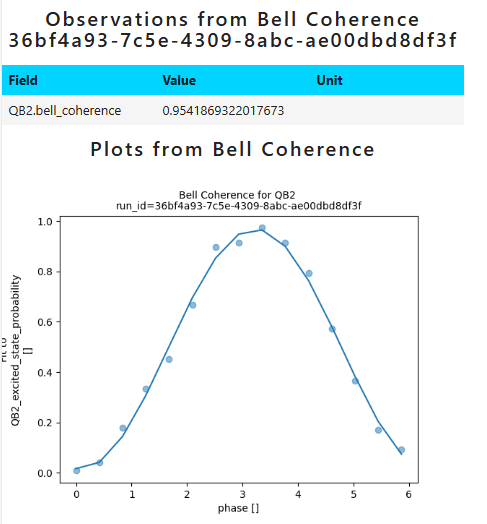

Making an Experiment subclass#
Introduction#
After making a successful prototype that allows you to run the experiment you want to create, it is
time to actually create it! We will inherit from Experiment,
but most of the time there is no need to override many or any methods, just the ones we will need. The code in exa
is written to follow the principle of composition, not inheritance, as often as possible. This is why circuit, sweep and
analyze functions are functions, and are just attached to the experiment as static methods. We already have those from
the prototyping stage!
Defining the class#
We will use the Bell coherence example here as well, but build it up to something more interesting. For now, let’s just define a new class:
from exa.core import Experiment
class BellCoherence(Experiment):
name = "bell_coherence"
default_label = "Bell Coherence"
parallel_group = ParallelGroup.CONNECTED_PAIRS
default_circuit_generation_function = staticmethod(bell_coherence_circuit)
default_analyze_function = staticmethod(analyze_bell)
The Experiment.name and Experiment.default_label attributes should be added as
soon as possible, especially the first one. This is because the function get_experiment(),
which is used to retrieve experimental data from previous runs from the database, uses the name attribute
to decide which class to initialize. The latter attribute will be displayed in all the reports, so it should be more descriptive.
We also specify the Experiment.parallel_group and attach the parallel versions of the functions written before as static
methods. This experiment can now be initialized, run and analyzed to produce results identical to our notebook
prototype… If we attach the sweeps manually. The default sweeps are clearly missing, so let’s add them next!
Note
What do you think will happen if we do not add any default sweeps?
Options and sweeps#
The Experiment subclasses use
the ExperimentOptions, which are a
pydantic model, to specify the behaviour of the experiment object. The options become an attribute
Experiment.options and can be modified after initializing. When creating a subclass, we need to
specify the default values of the options, if different from the base class, and we can also add our own, new options,
if they are needed. Options are used for many things at the moment, but can be thought of as variables that affect many
settings needed to work in tandem, and too complicated to modify separately. Options are also commonly used to control
the behaviour of sweeps, especially in parallel experiments used for calibration. There, each used gate needs a sweep,
but all sweeps happening in parallel need the same number of points.
To add new options we create a subclass of ExperimentOptions:
from exa.core import ExperimentOptions
class BellOptions(ExperimentOptions):
phase_sweep_points: int = 6
To modify the values of the default options we modify them at init:
class BellCoherence(Experiment):
name = "bell_coherence"
default_label = "Bell Coherence"
options: BellOptions
default_options = BellOptions(repetitions=128, readout_mode="threshold")
parallel_group = ParallelGroup.CONNECTED_PAIRS
default_circuit_generation_function = staticmethod(bell_coherence_circuit)
default_analyze_function = staticmethod(analyze_bell)
Here, we added a new option which will control the behaviour of our default sweep, as well as modified the existing
default values for repetitions and readout_mode. Now each point will be averaged 128 times, and the readout
instrument will decide if the measured voltage corresponds to 0 or 1, and only then they will be averaged all together
during postprocessing.
Let’s write the sweep generation function now:
def get_sweeps_bell(
group,
chip_topology,
settings,
phase_sweep_points: int,
):
phase_sweep = settings.stages.circuit_generation.circuit.phase.sweep(
np.linspace(0, 2 * np.pi, phase_sweep_points, endpoint=False)
)
return [phase_sweep]
The first argument to a sweep generation function must be group or components, depending on whether one wishes
to use the parallel framework or not. Here, it does not actually matter since the sweep does not affect any
locus-specific settings, but we will use group for consistency. The second and third arguments must be
chip_topology and settings. The setting tree is a source of the swept parameters, and chip topology is used for
example for finding the relevant coupler connecting a qubit pair. The remaining arguments should be a subset of the
options, with the same name and type, because they will be automatically populated from options where the function is
called.
We can now attach it to the experiment:
class BellCoherence(Experiment):
name = "bell_coherence"
default_label = "Bell Coherence"
options: BellOptions
default_options = BellOptions(repetitions=128, readout_mode="threshold")
parallel_group = ParallelGroup.CONNECTED_PAIRS
default_circuit_generation_function = staticmethod(bell_coherence_circuit)
default_sweep_generation_function = staticmethod(get_sweeps_bell)
default_analyze_function = staticmethod(analyze_bell)
This class now captures our prototype exactly. We can modify the number of points in the phase sweep very easily:
bell_exp = BellCoherence()
bell_exp.options.phase_sweep_points = 15
bell_exp.run(['QB3', 'QB2'])
bell_res = bell_exp.analyze()
bell_res.render_report()
We see:

We see that we were able to easily modify the number of points in the sweep using options. Note that the label we set is also displayed instead of “Multi Qubit Experiment”.#
We will discuss sweeps and how to generate them more in the appropriate section. Now, let’s explore what other class methods and attributes can be useful to override.
Circuit settings#
The circuit argument defaults may be provided using the method: Experiment.get_default_circuit_settings().
The most common use of this method is to set the circuit defaults based on experiment options, which allows specifying
how the circuit is to behave per experiment instance. If your circuit defaults are static, you can just provide them in
the signature of your circuit generation function, and there is no need to override this method.
Our circuit only has one argument, phase (the first two don’t count), so let us provide some default for that.
from exa.common.data import DataType, Parameter, Setting
class BellCoherence(Experiment):
name = "bell_coherence"
default_label = "Bell Coherence"
options: BellOptions
default_options = BellOptions(repetitions=128, readout_mode="threshold")
parallel_group = ParallelGroup.CONNECTED_PAIRS
default_circuit_generation_function = staticmethod(bell_coherence_circuit)
default_sweep_generation_function = staticmethod(get_sweeps_bell)
default_analyze_function = staticmethod(analyze_bell)
def get_default_circuit_settings(self) -> list[Setting]:
return [
Setting(
Parameter(name="phase", label="Applied phase", data_type=DataType.FLOAT),
3.14
),
]
We added a label to the phase parameter, which will now display automatically as a plot label if we plot against
this quantity. Other than that, this experiment is a bit too simple for this to be particularly useful, so I will revisit
the circuit settings later.
Experiment-specific settings#
In the Experiment framework, a setting tree may be generated by calling exp.get_settings(). The setting tree is mutable,
and may be modified and passed back to the experiment run through the settings key argument. You should never
override the Experiment.get_settings() method, but you are allowed and encouraged to override
Experiment.update_settings() which is called inside of it. We may decide some
experiment needs the settings modified in some way systematically, and we would like that to be automatic. Common
reasons include:
A more complicated calculation is needed to obtain correct circuit settings.
The experiment needs additional post-processing information, for example for multi-state readout.
Certain gate implementations should do something different than in general (for example, not use Virtual Z rotations).
All of these can be added in the Experiment.update_settings(). This method is called at the end of
the creation of the setting tree and receives the setting tree already updated with the full calibration and all the
other information needed.